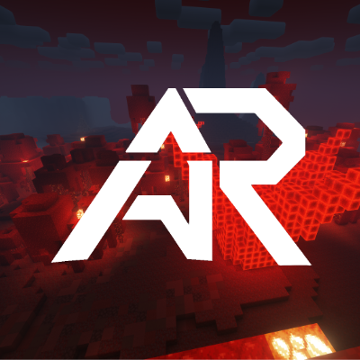

Skylonrio :
ip : play.alonrio.fr
Skylonrio est le premier projets d'Alonrio, commencé en 2020 ce serveur à de nombreuses fonctionnalités. Un nouveau systeme de pêche, économie, de quêtes, enchantement, minage et tout ces systemes sont custom et développer ou configurer par Alonrio.
Nous avons pu développer nos compétences en programmation et en besoin client pour nous permettres de mieux comprendre
et s'addapter